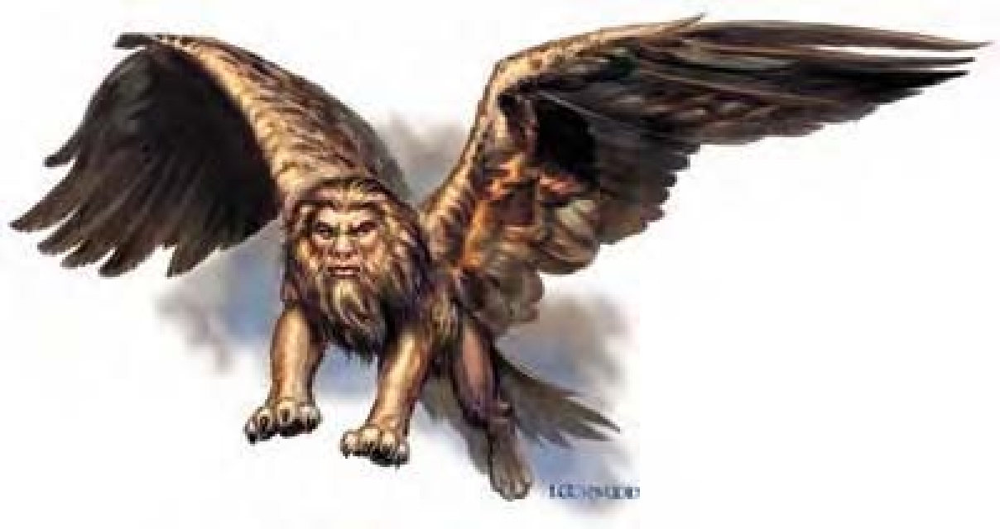

这种生物有着金棕色的狮子身体、巨鹰的翅膀与人脸。
翼狮致力于维护所有善良生物的福祉与安全，是一种高贵的生物。
这种生物大多居住在偏僻地区的古老废弃寺庙或废墟中，在此他们才能专心思考如何与世间邪恶作战。冒险者有时会为了寻求智能与古老的神秘知识而寻找翼狮。翼狮会热诚地接待善良生物。如果他们的目的是打击邪恶，翼狮也通常会提供帮助。翼狮能容忍中立的生物，但会小心翼翼地监视着他们。翼狮完全不能忍受邪恶生物，一见到就会发动攻击。
翼狮看起来十分高贵严肃，却是很有同情心的生物。
一般翼狮身长约8英尺，体重约500磅。
翼狮会通晓通用语、龙语与天界语。
| 资料栏位 | 翼狮 (Lammasu) 大型魔法兽 |
| 生命骰 | 7d10+21 (59HP) |
| 先攻 | +1 |
| 速度 | 30英尺 (6格)、飞行60英尺 (普通) |
| 防御等级 | 20 (-1体型、+1敏捷、+10天生)、接触10、措手不及19 |
| 基本攻击/擒抱 | +7 / +17 |
| 攻击 | 爪抓+12近战 (1d6+6) |
| 全力攻击 | 2爪抓+12近战 (1d6+6) |
| 占据/触及 | 10英尺 / 5英尺 |
| 特殊攻击 | 猛扑、耙抓1d6+3、法术 |
| 特殊能力 | 黑暗视觉60英尺、昏暗视觉、反邪恶法阵、类法术能力 |
| 豁免 | 强韧+8、反射+8、意志+7 |
| 属性 | 力量23、敏捷12、体质17、智力16、感知17、魅力14 |
| 技能 | 专注+13、交涉+4、神秘知识+13、聆听+13、察言观色+13、侦察+15 |
| 专长 | 盲战、钢铁意志、快速反射 |
| 环境 | 温带沙漠 |
| 组织 | 单独 |
| 宝藏 | 标准 |
| 阵营 | 总是守序善良 |
| 进化 | 8-10HD (大型)；11-21HD (超大型) |
| 等级修正值 | +5 |
翼狮使用法术与利爪作战，若见到善良生物遭受邪恶威胁会立刻挺身相助。
法术：翼狮施法时视同7级牧师，可以从牧师的法术列表中选取法术，并可由下列领域择二：善良、医疗、知识或秩序。
一般已准备牧师法术 (6/6/5/4/2；豁免检定DC=13+法术等级)：
零级――“侦测魔法”、“神导术” (2)、“光亮术”、“阅读魔法”、“提升抗力”；
一级――“祝福术” (2)、“侦测邪恶”、“神眷”、“熵光护盾”、“防护邪恶”*；
二级――“援助术”*、“坚韧术”、“蛮力术”、“次级复原术”、“抵抗能量伤害”；
三级――“昼明术”、“解除魔法”、“反邪恶法阵”*、“移除诅咒”；
四级――“圣光击”*、“中和毒性”。
*领域法术。领域：善良及医疗。
反邪恶法阵 (超自然)：翼狮会持续发出半径20英尺的反邪恶法阵。
类法术能力：每天2次――“高等隐形” (只对自身有效)；每天1次――“任意门”。施法者等级7。
猛扑 (特异)：如果翼狮向对手冲刺，就算已经做出移动动作，仍可进行全力攻击 (包括两次耙抓)。
耙抓 (特异)：攻击加值+12近战、伤害1d6+3。
技能：翼狮在进行“侦察”检定时具有+2种族加值。
喷吐攻击 (超自然)：30英尺锥状，每天1次，6d8点火焰伤害，通过反射检定 (DC=21) 伤害减半。

金戌翼狮乃由天界翼狮与金龙所生，为了能更积极地对抗邪恶而移居物质界。
在计算伤害减免时，金戌翼狮的天生武器视为魔法武器。
| 资料栏位 | 金戌翼狮 (天界半龙翼狮) 大型龙 |
| 生命骰 | 10d12+60 (125HP) |
| 先攻 | +3 |
| 速度 | 30英尺 (6格)、飞行60英尺 (普通) |
| 防御等级 | 29 (-1体型、+3敏捷、+14天生、+2 “+2防御护腕”、+1 “+1防护戒指”)、接触13、措手不及26 |
| 基本攻击/擒抱 | +10 / +23 |
| 攻击 | 爪抓+19近战 (1d6+9) |
| 全力攻击 | 爪抓+19近战 (1d6+9) 及 啮咬+13近战 (1d8+4) |
| 占据/触及 | 10英尺 / 5英尺 |
| 特殊攻击 | 喷吐攻击、猛扑、破邪斩、耙抓1d6+4、法术 |
| 特殊能力 | 伤害减免5 / 魔法、黑暗视觉60英尺、对火焰/“睡眠术”/麻痹免疫、昏暗视觉、反邪恶法阵、强酸抗力10、寒冷抗力10、电击抗力10、类法术能力、法术抗力15 |
| 豁免 | 强韧+13、反射+12、意志+10 |
| 属性 | 力量28、敏捷17、体质22、智力18、感知20、魅力18 |
| 技能 | 专注+19、交涉+19、神秘知识+17、界域知识+17、聆听+18、搜索+17、察言观色+18、法术辨识+19、侦察+20、生存+18 (在其他界域追踪+20) |
| 专长 | 盲战、钢铁意志、快速反射、专攻武器 (爪抓) |
| 环境 | 天界七山 |
| 组织 | 单独 |
| 宝藏 | 标准 |
| 阵营 | 总是守序善良 |
| 进化 | 11-30HD (超大型) |
| 等级修正值 | +10 |
喷吐攻击 (超自然)：30英尺锥状，每天1次，6d8点火焰伤害，通过反射检定 (DC=21) 伤害减半。
破邪斩 (超自然)：每天1次，金戌翼狮可对邪恶阵营敌人进行一般近战攻击时，造成10点额外伤害。
一般已准备牧师法术 (6/7/5/4/3；豁免检定DC=15+法术等级)：
零级――“侦测魔法”、“神导术” (2)、“光亮术”、“阅读魔法”、“提升抗力”；
一级――“祝福术” (2)、“侦测邪恶”、“神眷” (2)、“熵光护盾”、“防护邪恶”*；
二级――“援助术”*、“坚韧术”、“蛮力术”、“次级复原术”、“抵抗能量伤害”；
三级――“昼明术”、“解除魔法”、“反邪恶法阵”*、“移除诅咒”*；
四级――“驱逐术”、“圣光击”*、“中和毒性”。
*领域法术。领域：善良与医疗。
耙抓 (特异)：攻击加值+19近战、伤害1d6+4。
持有物：“+2防御护腕”、“+1防护戒指”。(不同的金戌翼狮其装备也不尽相同。)
| 对比项 | 翼狮 (标准) | 金戌翼狮 (天界半龙翼狮) |
|---|---|---|
| 生命骰 | 7d10+21 (59HP) | 10d12+60 (125HP) |
| 先攻 | +1 | +3 |
| 速度 | 30英尺 (6格)、飞行60英尺 (普通) | 30英尺 (6格)、飞行60英尺 (普通) |
| 防御等级 | 20 (-1体型、+1敏捷、+10天生)、接触10、措手不及19 | 29 (-1体型、+3敏捷、+14天生、+2“+2防御护腕”、+1“+1防护戒指”)、接触13、措手不及26 |
| 基本攻击/擒抱 | +7 / +17 | +10 / +23 |
| 攻击 | 爪抓+12近战 (1d6+6) | 爪抓+19近战 (1d6+9) |
| 全力攻击 | 2爪抓+12近战 (1d6+6) | 爪抓+19近战 (1d6+9) 及啮咬+13近战 (1d8+4) |
| 特殊攻击 | 猛扑、耙抓1d6+3、法术 | 喷吐攻击、猛扑、破邪斩、耙抓1d6+4、法术 |
| 特殊能力 | 黑暗视觉60英尺、昏暗视觉、反邪恶法阵、类法术能力 | 伤害减免5/魔法、黑暗视觉60英尺、对火焰/“睡眠术”/麻痹免疫、昏暗视觉、反邪恶法阵、强酸抗力10、寒冷抗力10、电击抗力10、类法术能力、法术抗力15 |
| 豁免 | 强韧+8、反射+8、意志+7 | 强韧+13、反射+12、意志+10 |
| 属性 | 力量23、敏捷12、体质17、智力16、感知17、魅力14 | 力量28、敏捷17、体质22、智力18、感知20、魅力18 |
| 技能 | 专注+13、交涉+4、神秘知识+13、聆听+13、察言观色+13、侦察+15 | 专注+19、交涉+19、神秘知识+17、界域知识+17、聆听+18、搜索+17、察言观色+18、法术辨识+19、侦察+20、生存+18 (在其他界域追踪+20) |
| 专长 | 盲战、钢铁意志、快速反射 | 盲战、钢铁意志、快速反射、专攻武器 (爪抓) |
| 环境 | 温带沙漠 | 天界七山 |
| 挑战级数 | 8 | 13 |
| 阵营 | 总是守序善良 | 总是守序善良 |
| 进化 | 8-10HD (大型)；11-21HD (超大型) | 11-30HD (超大型) |
| 等级修正值 | +5 | +10 |